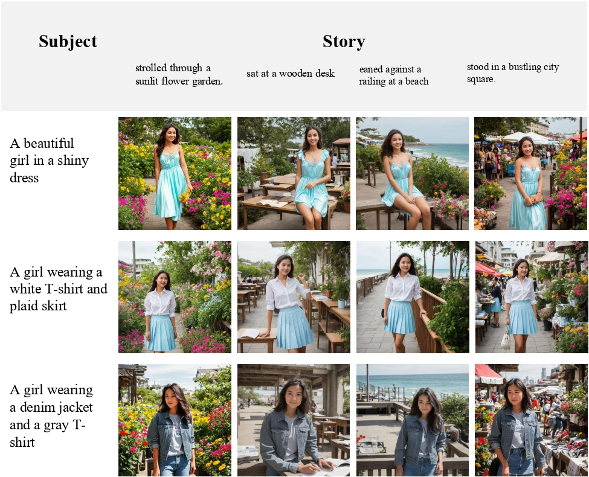
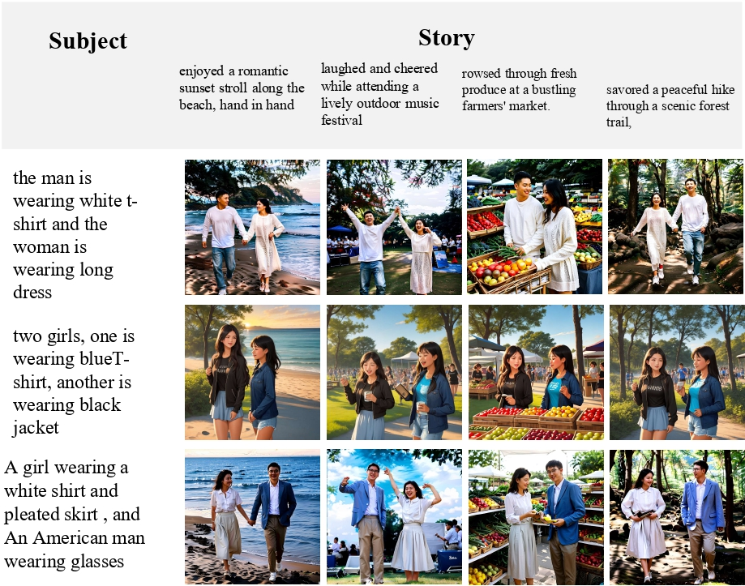
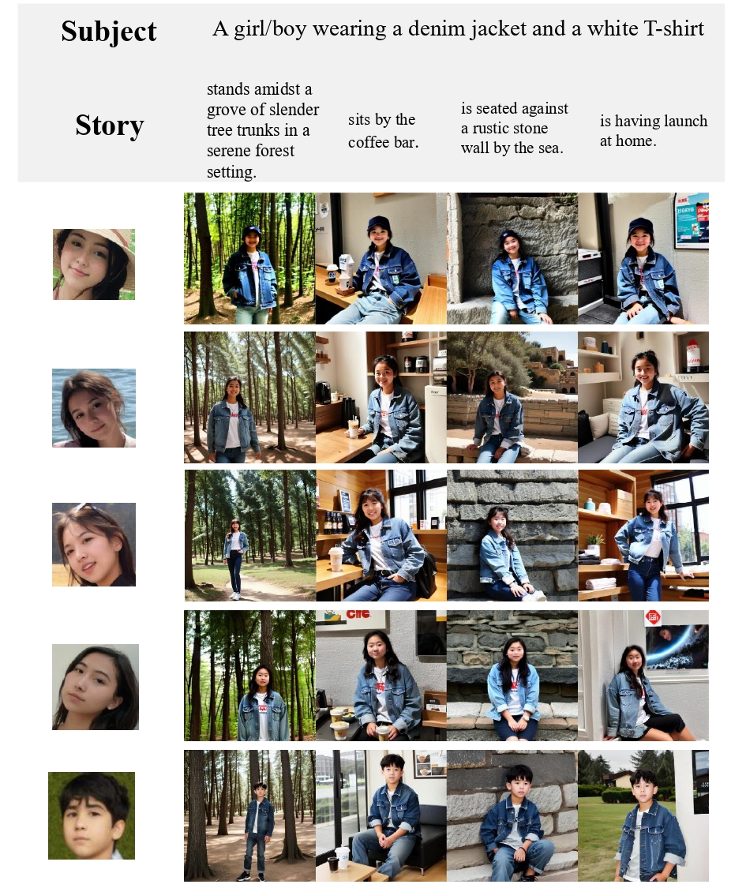
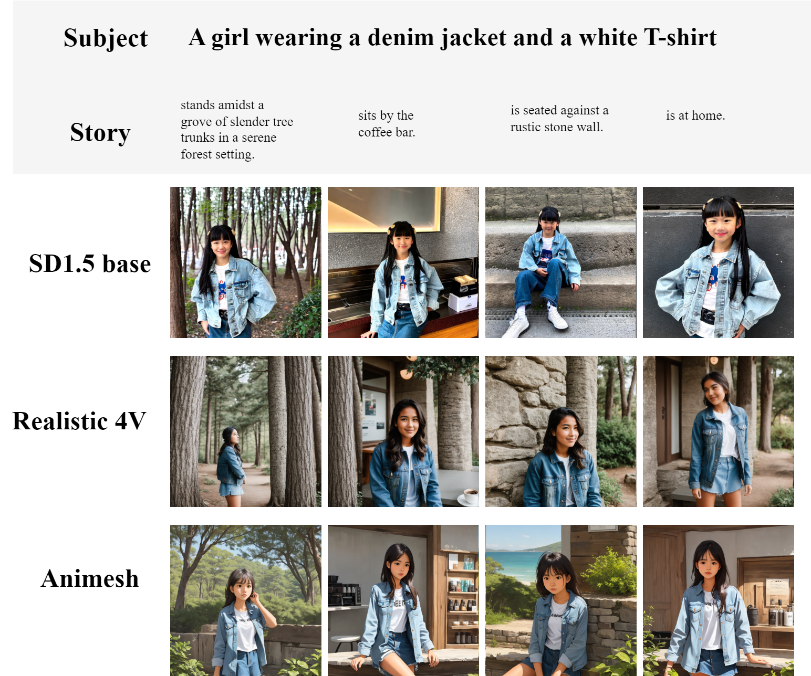

Abstract
Recent advances in text-to-image diffusion models have spurred significant interest in continuous story image generation. In this paper, we introduce Storynizor, a model capable of generating coherent stories with strong inter-frame character consistency, effective foreground-background separation, and diverse pose variation. The core innovation of Storynizor lies in its key modules: ID-Synchronizer and ID-Injector. The ID-Synchronizer employs an auto-mask self-attention module and a mask perceptual loss across inter-frame images to improve the consistency of character generation, vividly representing their postures and backgrounds. The ID-Injector utilize a Shuffling Reference Strategy (SRS) to integrate ID features into specific locations, enhancing ID-based consistent character generation. Additionally, to facilitate the training of Storynizor, we have curated a novel dataset called StoryDB comprising 100, 000 images. This dataset contains single and multiple-character sets in diverse environments, layouts, and gestures with detailed descriptions. Experimental results indicate that Storynizor demonstrates superior coherent story generation with high-fidelity character consistency, flexible postures, and vivid backgrounds compared to other character-specific methods.
Method
Overview of our proposed (a) Storynizor. Storynizor mainly contains two modules, IDInjector and ID-Synchronizer. ID-Injector extracts ID features of reference characters with a Shuffling Reference Strategy (SRS), while ID-Synchronizer introduces a mask perceptual loss to modify crossattention masks and utilizes an auto-mask self-attention module to ensure consistent generation of main characters across inter-frames, as well as vivid background.
To introduce ID-specific features from the reference images, ID-Injector extracts essential features from reference characters and integrates them into specific locations within the network. To make sure the ID-Injector learns the identity information from the reference character images without simply replicating the image feature from the reference image, we introduce a Shuffling Reference Strategy (SRS). Concretely, we randomly sample pairs of reference and ground-truth images from the same character set, with variations in layout, scenarios, and gestures. This strategy significantly boosts the generalization of the model and maintain consistency across diverse poses and environments, leading to notable improvements in performance.
StoryDB
Storynizor aims to generate consistent character images across diverse backgrounds. However, existing open-source datasets lack either rich background variety or fixed character attributes. To address this, we introduce StoryDB, a character-centric image-text pair dataset comprising 10,000 groups, each featuring the same character in consistent attire across different scenes, totaling 100,000 images. Each group contains 5-12 images with corresponding prompts, indexed shared prompt elements, and character mask images. StoryDB not only supports Storynizor’s training but also serves as a resource for future research in story generation and IP-consistent content creation
Results




Visulization Compared with Previous Work

Qualitative comparison of Storynizor and other consistent story generation methods. We
observe Storynizor outperforms other methods when generating consistent characters with vivid
backgrounds and flexible poses in prompt-only story generation. Additionally, it achieves high-fidelity
ID preservation in prompt-ID story generation
BibTeX
@misc{ma2024storynizorconsistentstorygeneration,
title={Storynizor: Consistent Story Generation via Inter-Frame Synchronized and Shuffled ID Injection},
author={Yuhang Ma and Wenting Xu and Chaoyi Zhao and Keqiang Sun and Qinfeng Jin and Zeng Zhao and Changjie Fan and Zhipeng Hu},
year={2024},
eprint={2409.19624},
archivePrefix={arXiv},
primaryClass={cs.CV},
url={https://arxiv.org/abs/2409.19624},
}
Visulization Compared with Previous Work
Qualitative comparison of Storynizor and other consistent story generation methods. We observe Storynizor outperforms other methods when generating consistent characters with vivid backgrounds and flexible poses in prompt-only story generation. Additionally, it achieves high-fidelity ID preservation in prompt-ID story generation
BibTeX
@misc{ma2024storynizorconsistentstorygeneration,
title={Storynizor: Consistent Story Generation via Inter-Frame Synchronized and Shuffled ID Injection},
author={Yuhang Ma and Wenting Xu and Chaoyi Zhao and Keqiang Sun and Qinfeng Jin and Zeng Zhao and Changjie Fan and Zhipeng Hu},
year={2024},
eprint={2409.19624},
archivePrefix={arXiv},
primaryClass={cs.CV},
url={https://arxiv.org/abs/2409.19624},
}